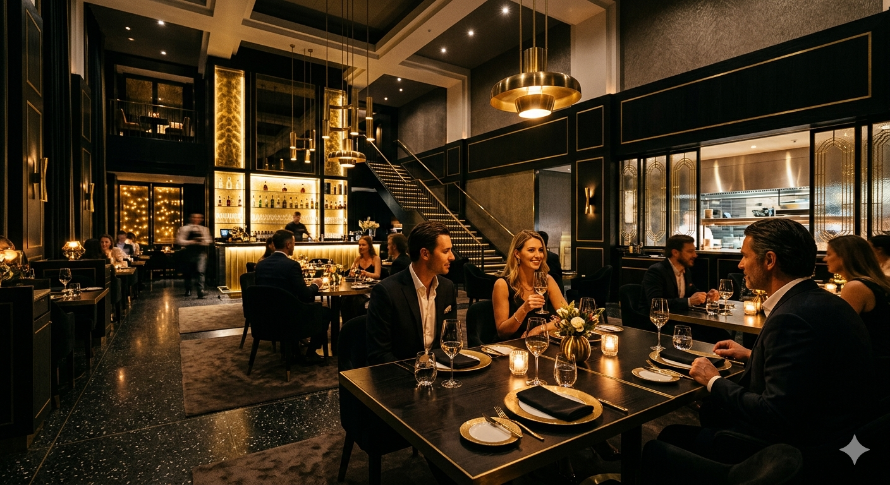
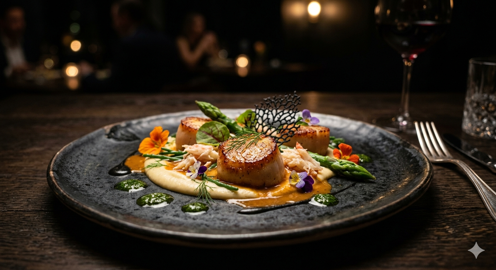
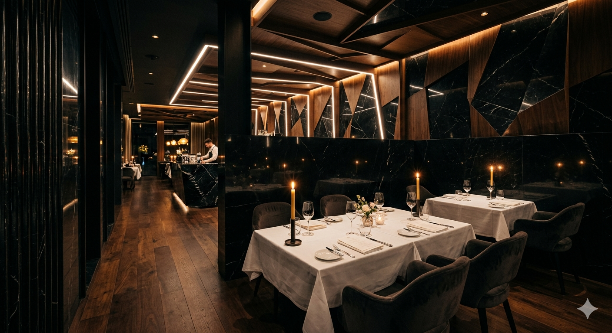
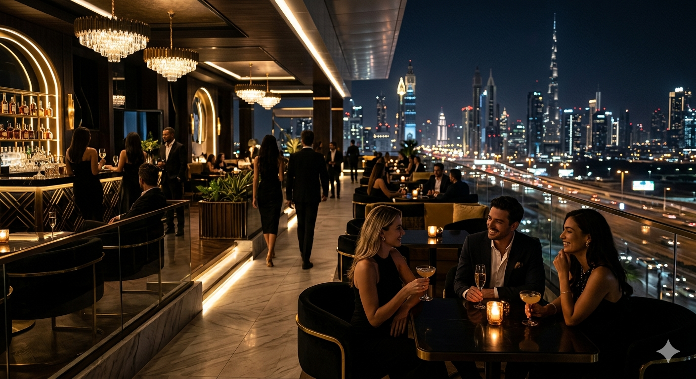
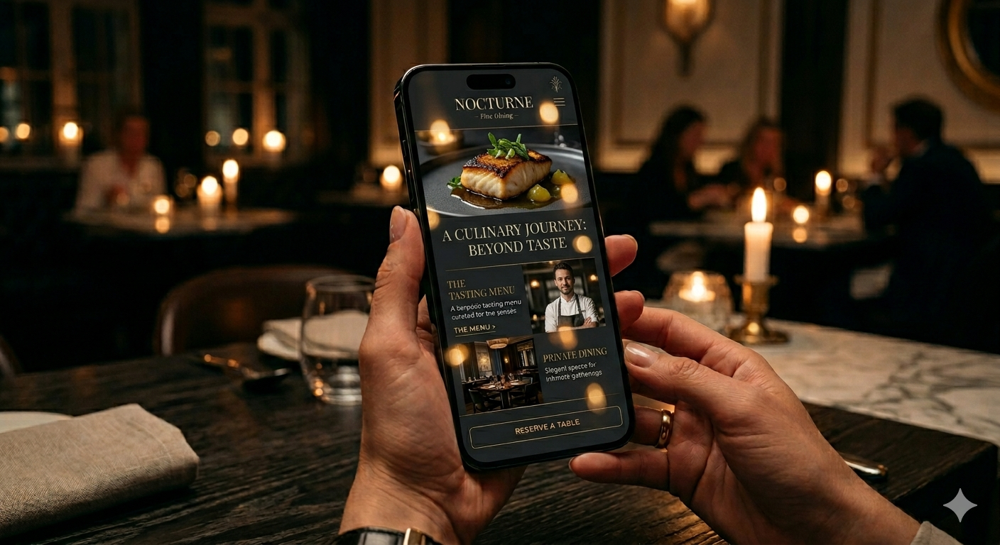
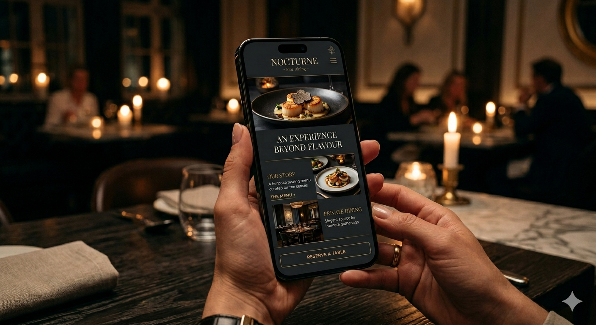

FINE DINING / DIGITAL EXPERIENCE
PROJECT OVERVIEW
ÉCLIT was crafted to communicate intimacy, sophistication, and refined culinary atmosphere through restrained typography, immersive imagery, and elevated visual storytelling.

Earthy depth balanced with refined texture and restrained elegance.

A sensory presentation designed around warmth, atmosphere, and precision.
ATMOSPHERIC DIRECTION

MOBILE EXPERIENCE


CRAFTED BY KAGONA WEB DESIGN